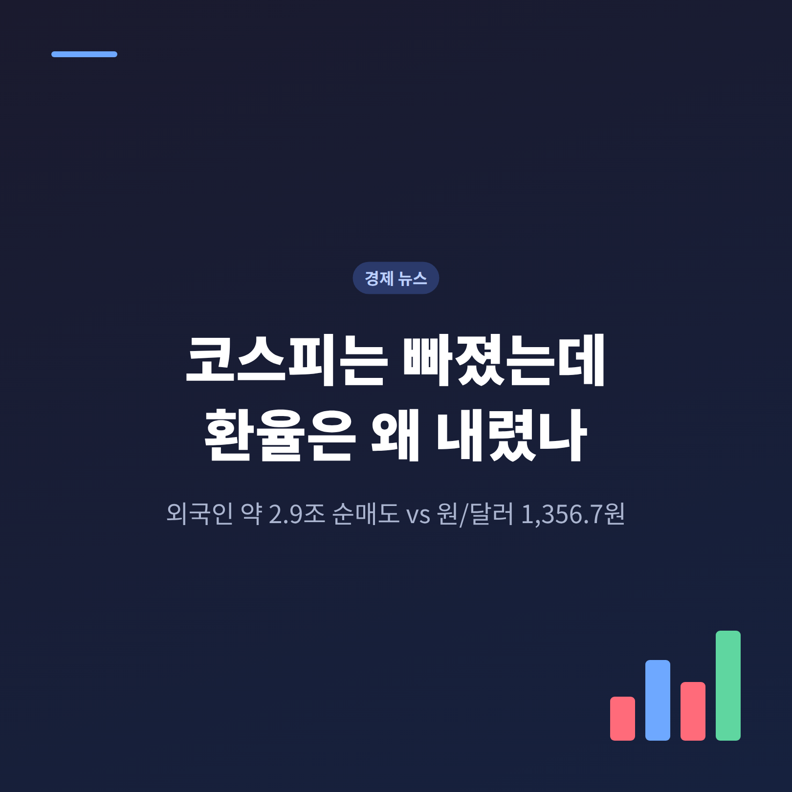
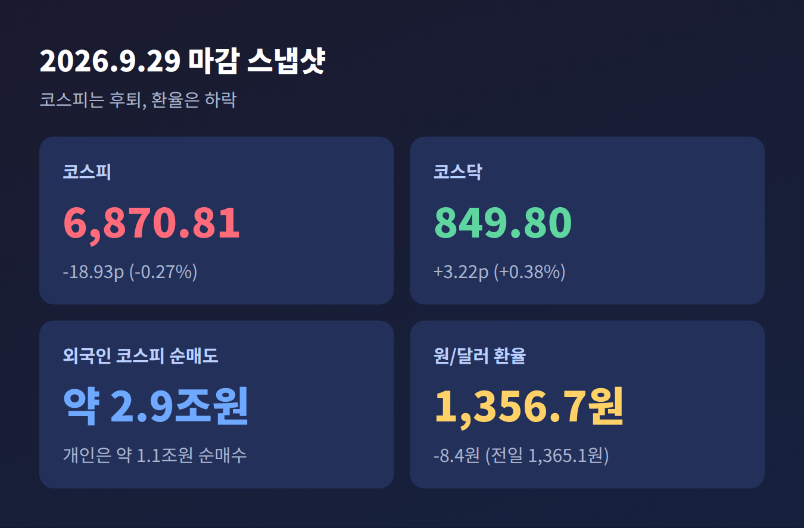
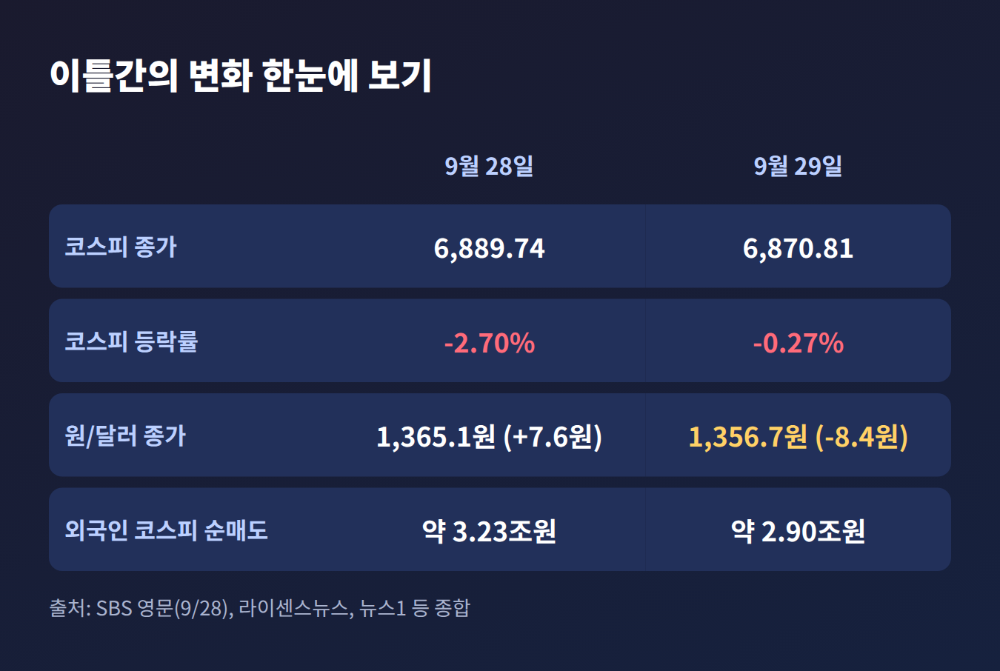
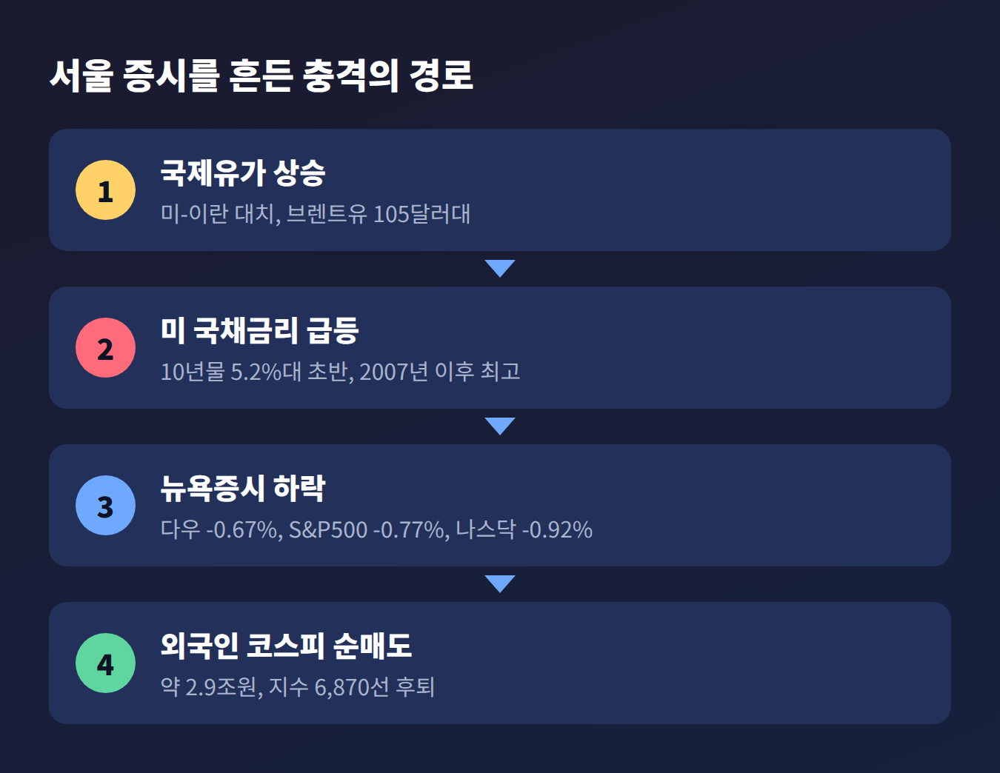
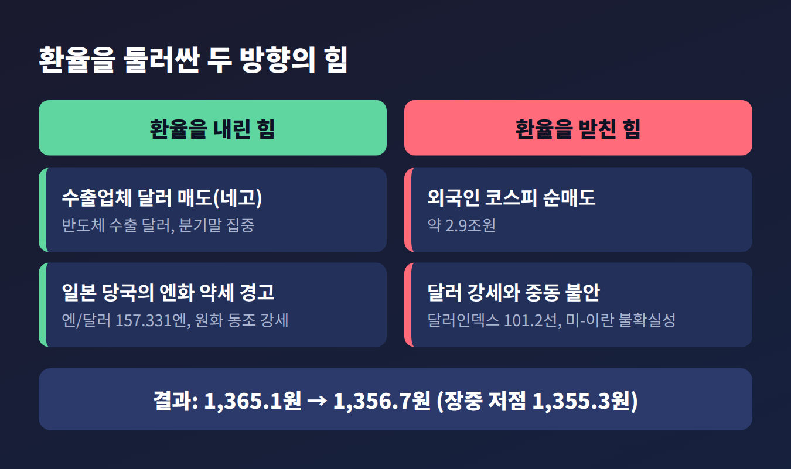
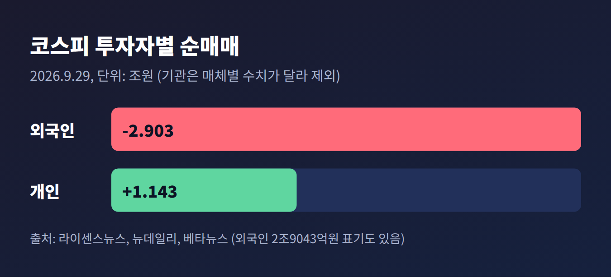
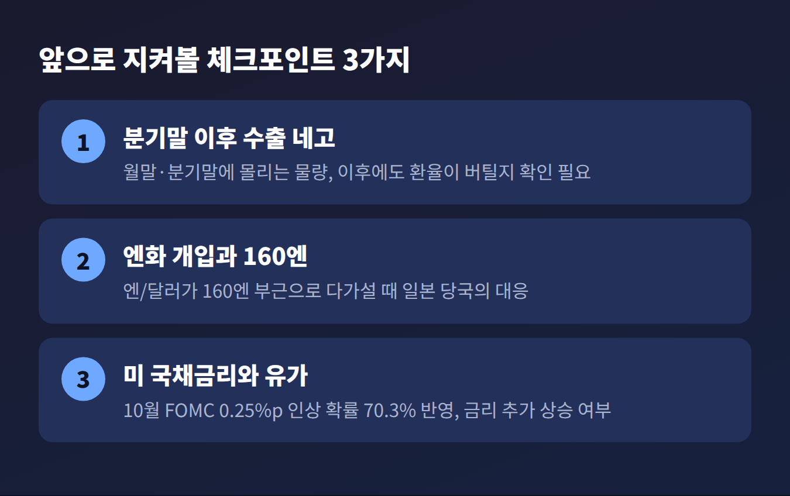

이번 글에서는 2026년 9월 29일 국내 금융시장에서 벌어진 이례적인 장면을 정리해 보겠습니다. 외국인이 코스피에서 약 2.9조 원을 팔았는데도 원/달러 환율은 8.4원 내린 1,356.7원에 마감했습니다. 미국 국채금리, 외국인 수급, 수출업체 물량, 엔화 변수를 차례로 풀어 보겠습니다.
세 줄 요약
먼저 숫자부터 보겠습니다. 코스피는 전 거래일보다 18.93포인트(0.27%) 내린 6,870.81에 장을 마쳤습니다. 코스닥은 3.22포인트(0.38%) 오른 849.80이었습니다.
장중 흐름은 훨씬 거칠었습니다. 아침 고점은 6,898.36이었고, 저점은 6,782.99까지 밀렸습니다. 하루 낙폭이 100포인트를 넘나든 셈입니다.
낙폭을 줄인 쪽은 개인이었습니다. 코스피에서 개인은 약 1조 1천억 원을 순매수해 외국인 물량을 받아냈습니다. 종가만 보면 조용해 보여도, 속은 상당히 요동친 하루였습니다.

전날 흐름도 함께 봐야 합니다. 9월 28일 코스피는 191.18포인트, 2.70% 급락한 6,889.74로 마감했습니다. 이틀 연속 하락이었던 것입니다. 같은 날 원/달러 환율은 7.6원 올라 1,365.1원이었습니다. 하루 만에 그 상승분 대부분을 되돌린 셈입니다.

발단은 뉴욕이었습니다. 9월 28일 미국 10년물 국채금리는 5.2%대 초반까지 올라 2007년 이후 최고 수준을 기록했습니다. 30년물도 5.5%를 넘어 20여 년 만의 최고 수준이었습니다. 보도마다 소수점 수치에 조금씩 차이가 있어 대략적인 수준으로 적습니다.
배경에는 유가가 있었습니다. 미국과 이란의 대치가 길어지고 호르무즈 해협의 공급 차질 우려가 커지면서 브렌트유는 배럴당 105달러대로 올랐습니다. 유가가 오르면 물가가 다시 뛸 수 있다는 걱정이 커지고, 그러면 금리는 더 높게 유지될 것이라는 계산이 서게 됩니다.
시장은 실제로 그렇게 반응했습니다. CME 페드워치는 10월 FOMC에서 0.25%포인트 인상될 확률을 70.3%로 반영했습니다. 뉴욕증시도 다우 0.67%, S&P500 0.77%, 나스닥 0.92% 내렸습니다.
무디스의 마크 잰디 수석이코노미스트는 "금리 급등으로 경제가 약해지기 시작했다"고 진단했습니다.
이 충격은 서울로 그대로 건너왔습니다. 금리가 오르면 위험자산의 매력은 줄어듭니다. 외국인은 코스피에서 약 2조 9천억 원을 팔았습니다. 다만 전날 3조 2,295억 원보다는 줄었다는 점도 기억해 둘 만합니다.

상식대로라면 외국인이 주식을 팔고 나갈 때 원화를 달러로 바꾸게 되므로 환율은 오릅니다. 실제로 이 매도세는 환율을 밀어 올리는 힘으로 작용했습니다. 문제는 반대쪽 힘이 더 컸다는 점입니다.
첫째, 수출업체의 달러 매도입니다. 반도체 수출 등으로 달러를 넉넉히 쥔 수출업체들이 월말과 분기말을 앞두고 달러를 대거 팔았습니다. 이를 시장에서는 네고 물량이라 부릅니다. 뉴스1은 "수출이 눌렀다"는 표현으로 이 흐름을 짚었습니다. 민경원 우리은행 이코노미스트는 원화가 견조한 이유를 "역내 달러 공급이라는 완충 재료"에서 찾았습니다.
둘째, 엔화입니다. 미무라 아쓰시 일본 재무성 재무관은 9월 28일 "일본의 총리와 재무상, 미국이 매우 분명한 메시지를 보냈다"며 시장이 이를 액면 그대로 받아들여야 한다고 말했습니다. 최근 엔화 움직임에 만족하지 않는다는 취지의 발언도 이어졌습니다. 사실상 개입 가능성을 열어 둔 것입니다.
이 경고가 엔화를 끌어올렸습니다. 엔/달러 환율은 157.331엔으로, 21일 이후 8일 만의 최저 수준까지 내렸습니다. 원화는 엔화와 비슷하게 움직이는 경향이 있어 함께 강세 쪽으로 기울었습니다. 원/엔 재정환율은 100엔당 862.27원으로 3.69원 내렸습니다.
한 매체는 이렇게 평가했습니다. 외국인 순매도에도 엔화 강세와 네고 물량 덕에 원화 강세 흐름이 더 강하게 작용했다는 것입니다.

환율이 내렸다고 해서 원화가 마냥 강했던 것은 아닙니다. 장중 저점은 1,355.3원이었고, 1,350원대 중반에서 더 내려가지는 못했습니다.
이유가 있습니다. 미국과 이란 협상의 불확실성 속에 유가가 오르며 달러인덱스가 101.2선까지 올랐습니다. 도널드 트럼프 대통령이 이란의 휴전안을 공식 거부했다는 보도도 위험 회피를 부추겼습니다. 여기에 외국인 순매도까지 겹쳐 있었습니다.
하나증권의 박준우 채권 전략가는 미국의 긴축 사이클 이후 정책 방향에 대한 불확실성이 금리에 위험 프리미엄으로 얹혔다고 설명했습니다. 금리 상승과 이에 따른 달러 강세를 계속 살펴야 한다는 조언이었습니다.
한국은행 부총재도 추석 연휴 동안 국제금융시장의 불확실성이 더 커진 것으로 보인다고 밝힌 바 있습니다.

첫째는 분기말 이후입니다. 수출업체 네고는 월말과 분기말에 몰리는 성격이 강합니다. 이 물량이 잦아든 뒤에도 환율이 지금 수준을 지킬지는 확인되지 않았습니다.
둘째는 엔화입니다. 일본은행이 9월에 금리를 올렸지만 신중한 태도를 보였다는 분석이 있고, 엔/달러가 160엔 부근으로 다시 다가설 수 있다는 우려도 남아 있습니다. 개입은 시장을 흔들 수는 있어도, 금리 격차라는 큰 흐름을 바꾸기는 어렵다는 지적도 나옵니다.
셋째는 미국 금리와 유가입니다. 10월 FOMC를 앞두고 인상 가능성이 높게 반영된 만큼, 국채금리가 더 오르면 외국인 매도가 길어질 수 있습니다. 그때는 수출업체의 달러 매도만으로 환율을 지탱하기 어려울 수 있습니다.
예전에는 외국인 매도가 곧 환율 상승이라는 공식이 통했습니다. 지금은 수출 물량과 엔화라는 변수가 그 공식에 끼어듭니다.

정리하면 이렇습니다. 주가와 환율이 반대로 움직인 것은 모순이 아니었습니다. 서로 다른 힘이 같은 날 동시에 작용했을 뿐입니다.
"주가는 외국인이, 환율은 수출업체와 엔화가 눌렀다." 29일 시장을 한 줄로 줄이면 이렇습니다.
한 가지 힘만 보고 시장을 읽으면 이런 날을 이해하기 어렵습니다. 여러 힘이 부딪치는 자리를 함께 보시길 권합니다.
※ 이 글은 언론 보도를 바탕으로 한 시장 해설이며, 투자 권유가 아닙니다. 투자 판단과 그에 따른 책임은 투자자 본인에게 있습니다. 수치는 보도 시점과 매체에 따라 다를 수 있습니다.
참고한 보도: 뉴스1, SBS Biz, 머니투데이, 라이센스뉴스, 뉴데일리, 비즈니스코리아, 베타뉴스, 데일리머니, 아주경제, 직썰, 싱글리스트, 뉴스핌, 파이낸셜뉴스, 헤럴드경제, 글로벌이코노믹 (2026년 9월 28~29일 기사)